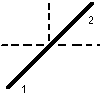

Cette page reprend l'aide d'OptGeo 3.03 (version pour ordinateur, à la souris). Dans la version web, on touche ou on clique au lieu de « cliquer deux fois » ; voir Utiliser OptGeo sur le web.
Lame semi-réfléchissante

Définition
Elle est définie par les points 1 et 2.
La lame peut être ajoutée :
- en cliquant sur le bouton de la barre d'outils ayant la forme ci-dessus, puis en faisant un clic simple pour saisir le premier point, puis en faisant un clic simple pour saisir le second (ne pas maintenir le bouton de la souris enfoncé entre les deux points)
OU
- menu « Ajouter » puis « Système optique idéal » puis « Lame semi-réfléchissante ».
Options
On peut imposer
- l'épaisseur et la couleur du trait représentant la lame à l'écran
Ces propriétés peuvent être rendues accessibles :
- à la construction de la lame si on passe par le menu « Ajouter »
- à tout instant en cliquant sur le bouton « Propriétés » de la barre d'outils, puis en cliquant sur un des cercles bleus qui apparaissent sur l'élément dont on veut obtenir les propriétés ; ne pas oublier à la fin de cliquer sur le bouton « Fin prop. » de la barre d'outils pour quitter le mode propriétés.
Remarques importantes
1) Lorsqu'un rayon lumineux arrive sur cette lame, il donne naissance à un rayon réfléchi et à un rayon transmis. Dans la terminologie utilisée dans ce logiciel, le rayon transmis est appelé « rayon enfant » (comportement contraire aux autres éléments réfractants, pour lesquels le rayon enfant est le rayon réfléchi). Pour une source ponctuelle, une onde plane, ou un rayon unique, le nombre maximal de rayons enfants est imposé (voir les propriétés de ces éléments).
2) La lame est idéale en ce sens qu'elle est infiniment mince : il n'y a pas de décalage latéral entre le rayon incident et le rayon transmis.
Divers
On peut demander que la normale à la lame soit tracée à chaque point d'intersection d'un rayon lumineux avec cette lame :
- menu « Options », vérifier que « Afficher les normales » est coché
OU
- dans la barre d'outils, boîte à cocher « Normales »
On peut aussi demander que les angles d'incidence soient affichés (en °) :
- menu « Options », vérifier que « Afficher les angles » est coché
OU
- dans la barre d'outils, boîte à cocher « Angles d'incidence et de réfraction »
L'angle de réflexion n'est pas affiché, afin de ne pas surcharger les représentations.
Le nombre de décimales sur les angles est fixé dans la boîte de dialogue des options des normales : menu « Options » puis « Options des normales »